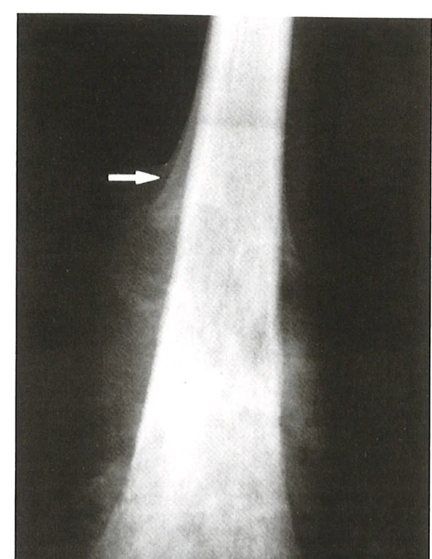
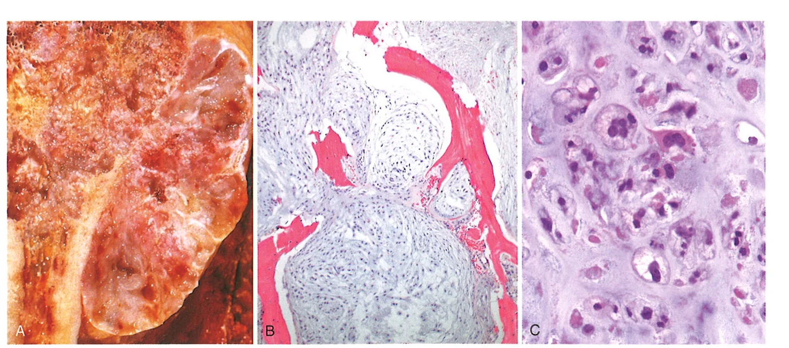
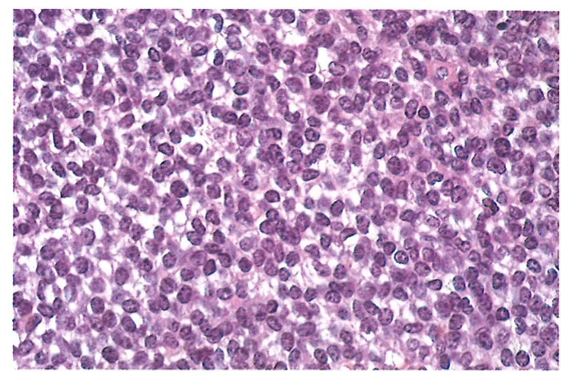
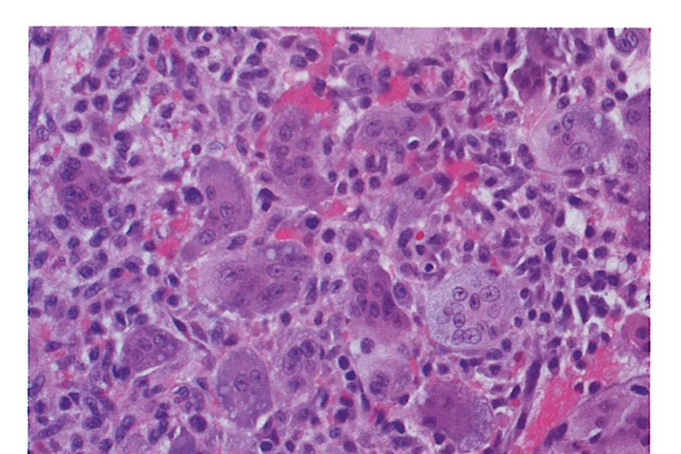
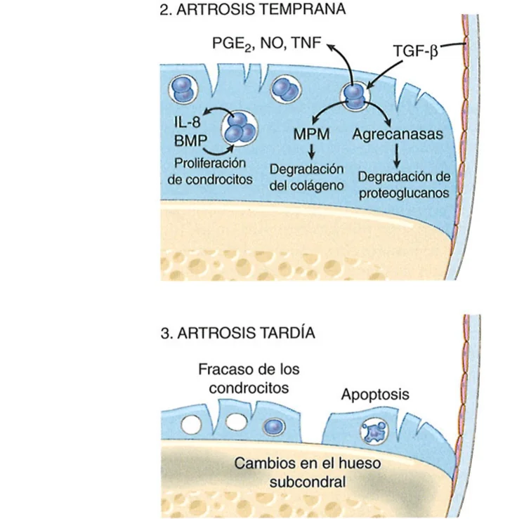
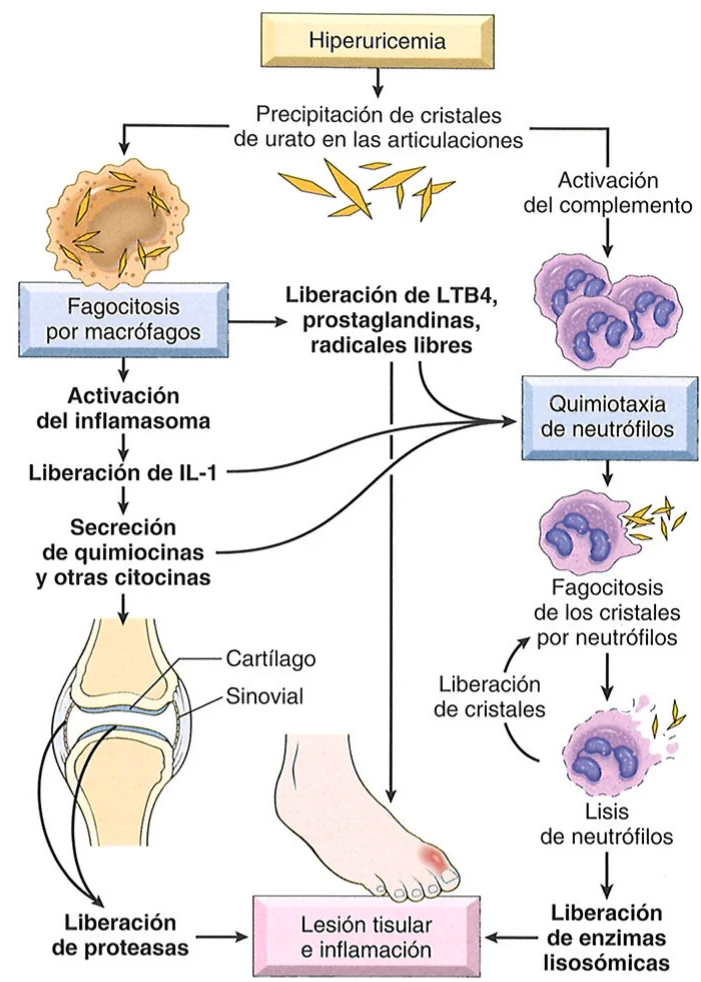
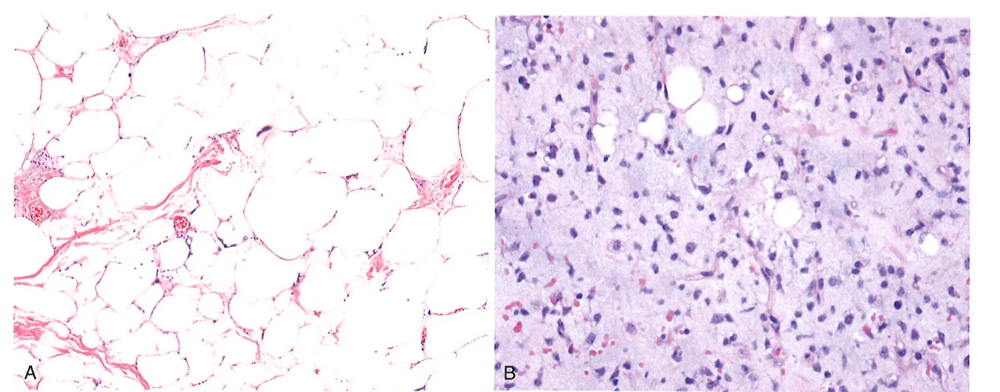
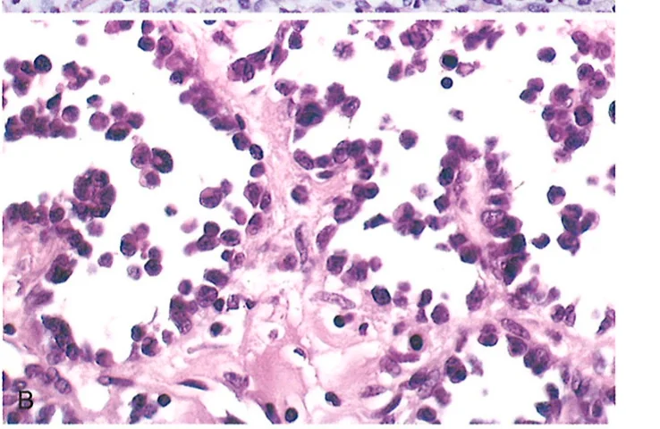

00 Alcance y método
Qué cubre esta guía
AlcanceCapítulo 26 del Robbins y Cotran, 10ª edición: páginas impresas 1171-1216 (46 páginas), contrastadas con el OCR del capítulo. Cada afirmación clínica lleva la página de origen.
Las citas p. N corresponden a la página impresa del libro. El texto se contrastó con el OCR del capítulo.
★ Repaso rápido
Lo esencial en 60 segundos
Si solo te llevas estas ideas
- El osteosarcoma es el sarcoma óseo primario más frecuente: adolescentes, metáfisis cerca de la rodilla, osteoide por células malignas y triángulo de Codman; RB y TP53 mutados; supervivencia a 5 años de 70% con quimioterapia neoadyuvante p. 1188-1189.
- El sarcoma de Ewing (EWSR1-FLI1, >90%) afecta a menores de 20 años en la diáfisis o pelvis, simula osteomielitis con fiebre y leucocitosis, y muestra células pequeñas redondas con reacción perióstica en piel de cebolla p. 1192-1193.
- El condrosarcoma del adulto mayor en el esqueleto axial se estratifica en grados 1 a 3: el grado 1 casi no metastatiza (80-90% de supervivencia a 5 años) y el grado 3 metastatiza en 70% (43%) p. 1192.
- El tumor de células gigantes nace en la epífisis del adulto joven; los estromales expresan RANKL y reclutan osteoclastos reactivos; recidiva en 40-60% tras legrado y el denosumab es adyuvante p. 1193-1194.
- Las metástasis son los tumores malignos más comunes del esqueleto: próstata, mama, riñón y pulmón (>75% en adultos), vía plexo de Batson, esqueleto axial, lesiones líticas o blásticas (WNT) p. 1196.
- Artrosis (mecánica, osteófitos, hueso ebúrneo, sin anticuerpos) frente a artritis reumatoide (pannus, erosiones periarticulares, anquilosis, ACPA, anti-TNF) y gota (urato en aguja, inflamasoma e IL-1, tofos, colchicina) frente a seudogota (romboide, ANKH, condrocalcinosis) son las cuatro comparaciones obligadas de artritis p. 1197-1206.
01 pp. 1171-1208
Ideas clave
Ideas clave
- Las articulaciones se clasifican en sólidas o sinartrosis (sin espacio articular, movimiento mínimo: suturas, sínfisis) y cavitadas o sinoviales (amplio rango de movimiento). La membrana sinovial tiene sinoviocitos de tipo A (macrófagos fagocíticos) y de tipo B (sintetizan ácido hialurónico), carece de membrana basal y su líquido es un filtrado plasmático rico en ácido hialurónico que lubrica y nutre al cartílago p. 1171, 1197.
- El cartílago hialino articular está compuesto por agua (70%), colágeno de tipo II (10%), proteoglucanos (8%) y condrocitos; carece de vasos, linfáticos y nervios, por lo que su destrucción es irreversible. Las enfermedades articulares lo dañan activando enzimas degradantes (IL-1, TNF) y disminuyendo los inhibidores p. 1197.
- Los tumores óseos primarios son infrecuentes frente a las metástasis y los tumores hematopoyéticos; su supervivencia global es de solo 50% y su tratamiento puede requerir cirugía desfigurante. En EE. UU. se diagnostican unos 2.400 sarcomas óseos nuevos por año; la mayoría surge en huesos largos, con edad y sitio anatómico característicos por tipo de tumor; la biopsia es necesaria para el diagnóstico definitivo en casi todos los casos p. 1187.
- La mayoría de los tumores óseos primarios son benignos, y las metástasis (especialmente de adenocarcinomas) superan con creces a las neoplasias primarias. Los tumores se clasifican según la célula normal que imitan o la matriz que producen: formadores de hueso, formadores de cartílago, tumor de células gigantes, sarcoma de Ewing y lesiones seudotumorales p. 1187.
- El osteosarcoma es el tumor maligno primario de hueso más frecuente (excluidos los mielomas); 75% antes de los 20 años, en la metáfisis de huesos largos (50% fémur distal o tibia proximal), con mutaciones de RB (70%) y alteraciones de TP53; se diagnostica por células malignas que producen osteoide; la quimioterapia neoadyuvante elevó la supervivencia a 5 años a ~70% sin metástasis evidentes p. 1188-1189.
- El condrosarcoma es el segundo tumor productor de matriz maligno; adultos ≥40 años, esqueleto axial, y su grado histológico (1 a 3) se correlaciona directamente con el pronóstico (grado 1: 80-90% de supervivencia a 5 años; grado 3: 43% y 70% metastatiza) p. 1191-1192.
- El sarcoma de Ewing (6-10% de los sarcomas óseos primarios; 80% en menores de 20 años) es un tumor de células pequeñas redondas definido por la fusión EWSR1-FLI1 (>90%), con fiebre y leucocitosis que simulan osteomielitis y reacción perióstica en piel de cebolla; supervivencia a 5 años de 75% con quimioterapia neoadyuvante p. 1192-1193.
- El tumor de células gigantes surge en la epífisis de huesos largos entre la 3ª y 5ª décadas; las células neoplásicas son precursores osteoblásticos que expresan RANKL, reclutando osteoclastos no neoplásicos; es benigno pero localmente agresivo y recidiva en 40-60% tras el legrado p. 1193-1194.
- Los tumores metastásicos son los tumores malignos más frecuentes del esqueleto: en adultos, más del 75% proviene de próstata, mama, riñón y pulmón; se diseminan por extensión directa, vía linfática o hematógena y por el plexo venoso de Batson; pueden ser líticos o escleróticos p. 1196.
- La artrosis es la enfermedad articular más común, degenerativa del cartílago (lesión mecánica + factores genéticos), y la artritis reumatoide es una artritis inflamatoria autoinmunitaria sistémica con pannus destructor; ambas se diferencian por patrón articular, serología (ACPA, factor reumatoide) y anatomía patológica p. 1197-1200.
- La gota resulta de la hiperuricemia (urato >6,8 mg/dl), generalmente por excreción renal reducida; los cristales de urato activan el inflamasoma y la IL-1 en los macrófagos; los cristales en aguja polarizables en los neutrófilos son diagnósticos y los tofos son patognomónicos p. 1204-1206.
- Los tumores de tejidos blandos surgen de progenitores mesenquimatosos pluripotenciales, no de células maduras; los sarcomas con cariotipos simples (translocaciones características) tienen utilidad diagnóstica, y el grado y el estadio (tamaño y profundidad) son los principales indicadores pronósticos p. 1208-1210.
02 pp. 1196
Tumores metastásicos del esqueleto (metástasis óseas)
- Son los tumores malignos más frecuentes del esqueleto y superan ampliamente a los tumores malignos óseos primarios p. 1196.
- Vías de diseminación al hueso: 1) extensión directa; 2) diseminación linfática o hematógena; y 3) siembra intramedular a través del plexo venoso de Batson. Cualquier tumor maligno puede extenderse a los huesos p. 1196.
- En adultos, más del 75% de las metástasis esqueléticas se originan en tumores de próstata, mama, riñón y pulmón; en niños, las más frecuentes son neuroblastoma, tumor de Wilms, osteosarcoma, sarcoma de Ewing y rabdomiosarcoma p. 1196.
- Suelen ser multifocales; los carcinomas de riñón y tiroides pueden presentarse como lesiones solitarias. Predominan en el esqueleto axial (columna, pelvis, costillas, cráneo y esternón), donde la médula tiene una red capilar rica p. 1196.
- El aspecto radiológico puede ser lítico (más frecuente) o esclerótico/blástico; las células tumorales liberan factores de crecimiento unidos a la matriz (TGF-β, IGF-1, FGF) al resorberse el hueso, y las metástasis escleróticas pueden deberse a proteínas WNT secretadas por el tumor que estimulan la formación osteoblástica p. 1196.
- La presencia de metástasis óseas presagia un mal pronóstico p. 1196.
03 pp. 1187-1194
Tumores óseos benignos y malignos
Clasificación de los principales tumores óseos primarios no hematopoyéticos:
| Categoría | Tumor | Localización típica | Edad (años) | Morfología / comportamiento |
|---|---|---|---|---|
| Formadores de cartílago (benigno) | Osteocondroma (40%) | Metáfisis de huesos largos | 10-30 | Excrecencia ósea con cápsula de cartílago |
| Formadores de cartílago (benigno) | Condroma | Huesos pequeños de manos y pies | 30-50 | Nódulo circunscrito de cartílago hialino en la médula |
| Formadores de cartílago (maligno) | Condrosarcoma convencional | Pelvis, hombro | 40-60 | Se extiende de la médula a través de la corteza a los tejidos blandos |
| Formadores de hueso (benigno) | Osteoma osteoide (32%) | Metáfisis de huesos largos | 10-20 | Cortical, microtrabéculas entrelazadas de hueso trenzado |
| Formadores de hueso (benigno) | Osteoblastoma | Columna vertebral | 10-20 | Elementos posteriores de las vértebras, histología similar al osteoma osteoide |
| Formadores de hueso (maligno) | Osteosarcoma | Metáfisis del fémur distal, tibia proximal | 10-20 | Infiltra desde la médula y levanta el periostio; células malignas que producen hueso trenzado |
| Origen desconocido (benigno) | Tumor de células gigantes (61%) | Epífisis de huesos largos | 20-40 | Destruye médula y corteza; láminas de osteoclastos |
| Origen desconocido | Quiste óseo aneurismático | Metáfisis de huesos largos, vértebras | 10-20 | Espacios hemorrágicos separados por tabiques celulares y fibrosos |
| Origen desconocido (maligno) | Sarcoma de Ewing | Diáfisis de huesos largos | 10-20 | Sábanas de células redondas primitivas |
Fuente: p. 1187 (tabla 26.4).
Tumores formadores de hueso
- Osteoma osteoide y osteoblastoma comparten histología pero difieren en tamaño, sitio y síntomas; la transformación maligna es infrecuente p. 1188.
- Osteoma osteoide: <2 cm, varón joven, esqueleto apendicular (50% en corteza de fémur o tibia); dolor nocturno intenso por PGE sintetizada por los osteoblastos, que se alivia con AINE; se trata con ablación por radiofrecuencia p. 1188.
- Osteoblastoma: >2 cm, elementos posteriores de las vértebras, dolor que no responde al ácido acetilsalicílico, sin hueso reactivo cortical; requiere legrado o resección en bloque p. 1188.
- Morfología común: trabéculas entrelazadas al azar de tejido óseo revestidas por una sola capa de osteoblastos prominentes; el tamaño pequeño, los márgenes bien definidos y la benignidad citológica los distinguen del osteosarcoma p. 1188.
Osteosarcoma
- Tumor maligno primario de hueso más frecuente (fuera de los mielomas); distribución bimodal: 75% antes de los 20 años, con un pico menor en adultos mayores asociado a enfermedad de Paget, infartos óseos y radioterapia previa (osteosarcomas secundarios). Predominio masculino leve (1,6:1) p. 1188.
- Se origina en la región metafisaria de huesos largos; casi 50% en fémur distal o tibia proximal, cerca de la rodilla. Presentación: dolor, a veces fractura patológica; radiología de masa destructiva mixta lítica y blástica de márgenes infiltrantes p. 1188.
- El tumor atraviesa la corteza y levanta el periostio, que deposita hueso reactivo; la sombra triangular resultante, el triángulo de Codman, indica un tumor agresivo p. 1188, 1189.
- Patogenia: el pico coincide con el crecimiento puberal, en la placa de crecimiento de huesos de rápido desarrollo. RB mutado hasta en 70% de los esporádicos (la mutación germinal confiere riesgo 1.000 veces mayor); TP53 (síndrome de Li-Fraumeni); CDKN2A inactivado; sobreexpresión de MDM2 y CDK4 en los de bajo grado, a menudo por amplificación de 12q13-q15 p. 1188.
- Morfología: tumores voluminosos blancogrisáceos con hemorragia y degeneración quística; destruyen la corteza y forman masas de tejidos blandos; pleomorfismo, células gigantes atípicas, mitosis anómalas (tripolares), necrosis e invasión vascular. El diagnóstico se basa en células tumorales malignas que producen osteoide mineralizado o no, típicamente fino y cordonal; si producen abundante cartílago se clasifican como osteosarcomas condroblásticos p. 1189.
- Clínica: se asume que todos tienen metástasis ocultas al diagnóstico; tratamiento con quimioterapia neoadyuvante, cirugía y quimioterapia adyuvante. Supervivencia a 5 años de 70% sin metástasis evidentes y <20% con metástasis, recidiva u osteosarcoma secundario. Metastatiza por vía hematógena a pulmones, huesos y encéfalo p. 1189.


Tumores formadores de cartílago
- Osteocondroma (exostosis): tumor óseo benigno más común; 85% solitario y esporádico, el resto en la exostosis hereditaria múltiple (autosómica dominante). Surge solo en huesos de origen endocondral, en la metáfisis cerca de la placa de crecimiento (rodilla, pelvis, escápula, costillas); varones 3:1 p. 1190.
- Patogenia del osteocondroma: mutaciones germinales con pérdida de función de EXT1 o EXT2 (sintetizan glucosaminoglucanos de heparán sulfato) y pérdida del alelo restante; la matriz anómala impide la difusión de Indian hedgehog, alterando la señalización de Hedgehog y la diferenciación de los condrocitos p. 1190.
- Morfología: sésil o pediculado, de 1 a 20 cm, con casquete de cartílago hialino con apariencia de placa de crecimiento desorganizada; la corteza del tallo se fusiona con la del hueso huésped y la cavidad medular es continua. Cesa con el cierre de la placa; el condrosarcoma secundario es infrecuente y ocurre sobre todo en la exostosis hereditaria múltiple p. 1190.
- Condroma (encondroma): tumor benigno de cartílago hialino intramedular, lesión metafisaria solitaria de huesos tubulares de manos y pies; radiología de zona lúcida con calcificaciones centrales y corteza intacta. Enfermedad de Ollier (encondromas múltiples) y síndrome de Maffucci (encondromas + hemangiomas de células fusiformes y otras neoplasias) p. 1190-1191.
- Patogenia de los encondromas: mutaciones heterocigóticas de IDH1/IDH2; los individuos sindrómicos son mosaicos. La enzima mutada produce el oncometabolito 2-hidroxiglutarato, que altera la metilación del ADN y puede provocar cambios epigenéticos en células vecinas ("transformación por asociación") p. 1191.
- Los condromas solitarios rara vez se transforman; en la encondromatosis la transformación sarcomatosa es más frecuente, y el síndrome de Maffucci añade riesgo de gliomas y otras neoplasias mutadas en IDH p. 1191.
Condrosarcoma
- Segundo tumor óseo productor de matriz maligno después del osteosarcoma; adultos ≥40 años, hombres el doble que las mujeres; variantes convencional, de células claras, desdiferenciado y mesenquimatoso p. 1191.
- Origina en el esqueleto axial (pelvis, hombro, costillas); rara vez en extremidades distales. Radiología: matriz calcificada en focos floculentos; los de bajo grado producen engrosamiento cortical reactivo y los de alto grado destruyen la corteza con masa de tejido blando. La variante de células claras nace en las epífisis; ~15% de los convencionales son secundarios sobre encondromas u osteocondromas p. 1191.
- Genética: mutaciones de EXT en los asociados a osteocondromas múltiples, IDH1/IDH2 en esporádicos y relacionados con condromatosis, y silenciamiento por metilación de CDKN2A en los esporádicos p. 1191-1192.
- Morfología: nódulos de cartílago translúcido blancogrisáceo con matriz gelatinosa o mixoide, calcificaciones irregular y necrosis central quística; el cartílago neoplásico infiltra la médula y rodea las trabéculas preexistentes; se gradúan de 1 a 3. El desdiferenciado es un condrosarcoma de bajo grado con un segundo componente de alto grado que no produce cartílago; el de células claras tiene condrocitos de citoplasma claro con células gigantes tipo osteoclasto; el mesenquimatoso combina cartílago bien diferenciado con sábanas de células pequeñas redondas p. 1192.
- Clínica: masas dolorosas de crecimiento progresivo; el grado correlaciona con el comportamiento. Grado 1: rara vez metastatiza, supervivencia a 5 años de 80-90%; grado 3: 70% metastatiza por vía hematógena (pulmones), supervivencia de 43%. Tratamiento: resección amplia; los desdiferenciados y mesenquimatosos agregan quimioterapia adyuvante p. 1192.


Sarcoma de Ewing
- Tumor maligno de células redondas primitivas sin diferenciación evidente; 6-10% de los tumores óseos malignos primarios y segundo grupo de sarcomas óseos en niños; 80% menores de 20 años, con fuerte predilección por caucásicos p. 1192.
- Origina en la diáfisis de huesos tubulares largos (fémur) y huesos planos de la pelvis; masa dolorosa creciente, sitio caliente e inflamado, con fiebre, velocidad de sedimentación elevada, anemia y leucocitosis que simulan infección. Radiología: tumor lítico de márgenes permeables o "apolillados" con reacción perióstica en piel de cebolla p. 1192.
- Patogenia: >90% con translocación equilibrada del gen EWSR1 (cromosoma 22), en la gran mayoría con FLI1 (cromosoma 11), creando el gen de fusión EWSR1/FLI1; la proteína quimérica une la cromatina y desregula la transcripción. El origen probable son progenitores mesenquimatosos y células neuroectodérmicas primitivas p. 1192.
- Morfología: surge en la cavidad medular e invade corteza, periostio y tejidos blandos; sábanas de células pequeñas redondas uniformes con escaso citoplasma claro por glucógeno; rosetas de Homer-Wright indican diferenciación neuroectodérmica; necrosis geográfica prominente p. 1193.
- Clínica: quimioterapia neoadyuvante + resección + quimioterapia (± radioterapia) logra supervivencia a 5 años de 75% y curación a largo plazo de 50%; la necrosis inducida por quimioterapia es indicador pronóstico positivo p. 1193.


Tumor de células gigantes
- Tumor benigno con abundantes células gigantes multinucleadas tipo osteoclasto (osteoclastoma); localmente invasivo; entre la 3ª y 5ª décadas p. 1193.
- Patogenia: las células neoplásicas son precursores de osteoblastos primitivos que expresan altos niveles de RANKL, promoviendo la diferenciación de osteoclastos maduros no neoplásicos; la resorción localizada es muy destructiva. Las células neoplásicas portan mutaciones del gen de la histona 3.3 p. 1193.
- Nace en la epífisis y puede extenderse a la metáfisis; la mayoría cerca de la rodilla (fémur distal o tibia proximal); puede simular artritis y presentar fracturas patológicas p. 1193.
- Morfología: lesión predominantemente lítica y expansiva que destruye la corteza; masa pardo-rojiza con degeneración quística; células mononucleares ovales uniformes con células gigantes tipo osteoclasto de 100 o más núcleos; las células tumorales no sintetizan hueso ni cartílago p. 1193.
- Clínica: legrado con recidiva local en 40-60%; hasta 4% metastatiza a pulmón con posible regresión espontánea y rara vez es mortal; el inhibidor de RANKL denosumab es adyuvante prometedor p. 1194.


Triángulo de CodmanEl osteosarcoma levanta el periostio, que deposita hueso reactivo formando una sombra triangular entre la corteza y el periostio elevado; ese signo radiológico indica un tumor agresivo y orienta el diagnóstico frente a lesiones benignas metafisarias p. 1188-1189.
04 pp. 1194-1207
Lesiones seudotumorales de los huesos
Quiste óseo aneurismático (QOA)
- Espacios multiloculados llenos de sangre; la mayoría en la adolescencia; fémur, tibia y elementos posteriores vertebrales. Radiología: lesión lítica expansiva bien circunscrita, "cáscara de huevo" periférica, aspecto de "pompas de jabón" y tabiques con niveles hidroaéreos en TC/RM; estos hallazgos no son específicos p. 1194.
- Patogenia: en ~70% hay reordenamientos de 17p13 en las células fusiformes, con fusión de USP6 a promotores activos en osteoblastos (p. ej., CDH11); USP6 regula NF-κB, que induce metaloproteasas y resorción quística p. 1194.
- Morfología: espacios hemorrágicos separados por tabiques de células fusiformes, células gigantes tipo osteoclasto y hueso reactivo; un tercio contiene "hueso azul" metaplásico p. 1194.
- Clínica: dolor y tumefacción, a veces compresión nerviosa; benigno pero localmente invasivo; legrado o resección con recidiva de 10-50% p. 1195.
Defecto cortical fibroso y fibroma no osificante
- Anomalías comunes del desarrollo: presentes hasta en 50% de los niños mayores de 2 años, hallazgo incidental; metáfisis excéntrica de fémur distal y tibia proximal, bilaterales o múltiples en casi la mitad. Lesiones >5-6 cm se denominan fibromas no osificantes p. 1195.
- Morfología: radiotransparencia bien delimitada con borde esclerótico; fibroblastos uniformes en patrón estoriforme con macrófagos espumosos, células gigantes e hemosiderina p. 1195.
- Clínica: asintomáticos, resuelven espontáneamente; los que crecen pueden fracturarse y los fibromas no osificantes se tratan con legrado, a veces con injerto óseo p. 1195.
Displasia fibrosa
- Tumor benigno comparado con una detención localizada del desarrollo; patrones: monostótico, poliostótico, síndrome de Mazabraud (con mixomas de tejidos blandos) y síndrome de McCune-Albright (poliostótica + manchas café con leche + endocrinopatías, sobre todo pubertad precoz) p. 1195.
- Patogenia: mutaciones somáticas con ganancia de función de GNAS1 (subunidad estimuladora de Gs) tempranas en la embriogenia; individuos mosaicos; la Gs constitutivamente activa promueve proliferación y altera la diferenciación osteoblástica p. 1195.
- Morfología: lesiones líticas intramedulares que expanden y arquean la corteza sin reacción perióstica; trabéculas curvilíneas de hueso sin reborde osteoblástico en fondo fibroblástico; cartílago en 20%, degeneración quística y macrófagos espumosos frecuentes p. 1196.
- Clínica: la monostótica se estabiliza con el cierre de la placa (fémur, tibia, costillas, mandíbula, calota); la poliostótica puede deformar y fracturar (afectación craneofacial en hasta 100% de la enfermedad extensa); bisfosfonatos para el dolor; transformación maligna en sarcoma rara. El síndrome de McCune-Albright cursa con desarrollo sexual precoz, principalmente en niñas p. 1196.
Tumores articulares y lesiones seudotumorales
- Los gangliones (hasta 1,5 cm, típicos de la muñeca) derivan de degeneración quística o mixoide del tejido conjuntivo; su pared carece de revestimiento celular y no comunican con la articulación. El quiste sinovial (p. ej., quiste de Baker poplíteo, asociado a artritis reumatoide) es una hernia de la sinovial a través de la cápsula p. 1207.
- Tumor tenosinovial de células gigantes: neoplasia benigna del revestimiento sinovial de articulaciones, vainas tendinosas y bolsas; formas difusa (antes sinovitis vellonodular pigmentada; articulaciones grandes) y localizada (nódulo en vaina tendinosa de la mano); 20-40 años, ambos sexos p. 1207.
- Patogenia: translocación somática t(1;2)(p13;q37) que fusiona el promotor del colágeno VI proximal al gen MCSF; la sobreexpresión de M-CSF estimula el crecimiento por efectos autocrinos y paracrinos p. 1207.
05 pp. 1197-1206
Artritis
Comparación entre artrosis y artritis reumatoide:
| Parámetro | Artrosis | Artritis reumatoide |
|---|---|---|
| Anomalía patógena primaria | Lesión mecánica del cartílago articular | Autoinmunidad |
| Acción de la inflamación | Secundaria; los mediadores inflamatorios exacerban el daño del cartílago | Primaria: destrucción del cartílago por linfocitos T y anticuerpos contra antígenos articulares |
| Articulaciones afectadas | Principalmente las que soportan peso (rodillas, caderas) | A menudo comienza en las articulaciones pequeñas de los dedos; progresión a múltiples articulaciones |
| Patología | Degeneración y fragmentación del cartílago, espolones óseos, quistes subcondrales; inflamación mínima | Pannus inflamatorio que invade y destruye el cartílago; inflamación crónica intensa; anquilosis |
| Anticuerpos séricos | Ninguno | Varios, como ACPA y factor reumatoide |
| Afectación de otros órganos | No | Sí (pulmones, corazón, otros) |
Fuente: p. 1197-1198 (tabla 26.5).
Artrosis
- Enfermedad articular más común; degeneración del cartílago con fallo estructural y funcional de la articulación sinovial; es principalmente degenerativa, no inflamatoria, pese al nombre inglés "osteoartritis" p. 1198.
- Artrosis primaria (idiopática, envejecimiento): insidiosa, oligoarticular; artrosis secundaria (~5%) en jóvenes con deformidad, lesión previa o enfermedad sistémica (diabetes, ocronosis, hemocromatosis, obesidad marcada). Rodillas y manos más frecuentes en mujeres; caderas en hombres; la prevalencia crece exponencialmente tras los 50 años y ~40% de los mayores de 70 años está afectado p. 1198.
- Patogenia: el estrés biomecánico es el mecanismo principal, con predisposición genética de los condrocitos; la degradación supera la síntesis de matriz; los condrocitos secretan metaloproteasas de matriz que degradan el colágeno de tipo II, y citocinas (TGF-β, TNF, IL-8, prostaglandinas, óxido nítrico) perpetúan la inflamación de bajo grado p. 1198.
- Morfología: proliferación de condrocitos en grupos, mayor agua y menos proteoglucanos, fibrilación de la zona superficial con fisuras; cuerpos sueltos cartilaginosos; el hueso subcondral expuesto se pule hasta el aspecto de marfil (hueso ebúrneo); esclerosis y microfracturas subcondrales con quistes, y osteófitos marginales cubiertos de fibrocartílago p. 1198-1199.
- Clínica: asintomática hasta los 50 años; dolor intenso y continuo que empeora con el uso, rigidez matutina, crepitación y limitación del movimiento p. 1198.


Artritis reumatoide
- Artritis inflamatoria crónica autoinmunitaria sistémica; participan factores ambientales (infección, tabaquismo), genes de susceptibilidad (HLA) y la citrulinación enzimática de proteínas, que rompe la tolerancia y genera ACPA; el TNF es central en la patogenia p. 1200.
- Morfología: afecta las articulaciones pequeñas de manos y pies; sinovial edematosa, hiperplásica con vellosidades; infiltrados inflamatorios densos con folículos linfoides (CD4+, linfocitos B, células plasmáticas), angiogenia y exudado fibrinopurulento; la actividad osteoclástica subcondral produce erosiones periarticulares. El conjunto forma el pannus, que destruye el cartílago y al puente entre huesos termina en anquilosis fibrosa y luego ósea p. 1201.
- Nódulos reumatoides: subcutáneos (antebrazo, codos, occipucio); granuloma con necrosis fibrinoide central rodeada de macrófagos en empalizada. La enfermedad grave puede asociar vasculitis leucocitoclástica con púrpura, úlceras e infarto ungueal, y compromiso pleuropulmonar y ocular p. 1201.
- Clínica: pródromos de malestar y fatiga; artritis simétrica de articulaciones pequeñas (metacarpofalángicas e interfalángicas proximales, a diferencia de la artrosis), hinchadas, calientes y dolorosas, con rigidez matutina que no cede con la actividad; deformidades con desviación radial de la muñeca, desviación cubital de los dedos, cuello de cisne y ojal. Radiología: derrames, osteopenia yuxtaarticular y erosiones p. 1202.
- Diagnóstico serológico con ACPA y factor reumatoide; tratamiento con corticoesteroides, metotrexato y sobre todo antagonistas del TNF, cuyo uso prolongado predispone a infecciones oportunistas como M. tuberculosis p. 1202.
Otras artritis autoinmunitarias
- Artritis idiopática juvenil (AIJ): grupo heterogéneo con artritis antes de los 16 años por ≥6 semanas; más oligoartritis, enfermedad sistémica y afectación de articulaciones grandes que en la AR; ANA característicos y nódulos reumatoides ausentes; asociada a variantes de PTPN22 y HLA; anticuerpo contra el receptor de IL-6 con cierta eficacia; solo ~10% desarrolla discapacidad grave p. 1202.
- Espondiloartropatías seronegativas: sin factor reumatoide, lesión de entesis, afectación sacroiliaca, asociación con HLA-B27 y proliferación ósea con anquilosis p. 1202.
- Espondilitis anquilosante: destrucción del cartílago y anquilosis de articulaciones sacroiliacas y vertebrales; dolor lumbar e inmovilidad en la 2ª-3ª décadas; ~90% positivo para HLA-B27; articulaciones periféricas afectadas en al menos un tercio p. 1202.
- Artritis reactiva: triada de artritis, uretritis o cervicitis no gonocócica y conjuntivitis tras infección genitourinaria (Chlamydia) o digestiva (Shigella, Salmonella, Yersinia, Campylobacter, Clostridioides difficile); frecuente HLA-B27; oligoartritis asimétrica aguda de extremidades inferiores, entesitis (talón), dactilitis en salchicha y manifestaciones extraarticulares (conjuntivitis, uveitis, valvulopatía aórtica); ~50% recidiva p. 1203.
Artritis infecciosa
- Los microorganismos llegan por diseminación hematógena, inoculación directa o extensión contigua de osteomielitis o absceso; el cartílago tiene capacidad regenerativa limitada, por lo que la destrucción rápida deja deformidades permanentes p. 1203.
- Artritis supurativa aguda: bacterias por vía hematógena; en recién nacidos por extensión desde osteomielitis epifisaria. H. influenzae en menores de 2 años; S. aureus en niños mayores y adultos; gonococo en la adolescencia tardía y adultez temprana; Salmonella en drepanocitosis a cualquier edad p. 1203.
- Artritis de Lyme (Borrelia burgdorferi): sin tratamiento, hasta 80% desarrolla artritis migratoria crónica de articulaciones grandes (rodillas, hombros, codos, tobillos); las espiroquetas solo se detectan en 25%, pero la serología anti-Borrelia es diagnóstica; histología de sinovitis crónica con linfocitos T CD4+ y endoarteritis obliterante, semejante a la AR en casos graves; los antibióticos curan 90%, pero existe una artritis crónica refractaria de posible base autoinmunitaria p. 1204.
Artritis inducida por cristales
| Categoría clínica | Síntesis de ácido úrico | Excreción de ácido úrico |
|---|---|---|
| Gota primaria (90%), defectos enzimáticos desconocidos (85-90%) | Normal | Disminuida |
| Gota primaria, defectos enzimáticos conocidos (p. ej., deficiencia parcial de HGPRT) | Aumentada | Normal |
| Gota secundaria por aumento del recambio de ácidos nucleicos (p. ej., leucemia) | Aumentada | Normal |
| Gota secundaria, enfermedad renal crónica | Normal | Disminuida |
| Gota secundaria congénita (síndrome de Lesch-Nyhan, deficiencia de HGPRT) | Aumentada | Normal |
Fuente: p. 1204 (tabla 26.6).
Gota
- Artritis aguda transitoria por cristales de urato monosódico depositados en y alrededor de las articulaciones; base común de la gota primaria (90% de los casos) y secundaria es el exceso de ácido úrico corporal p. 1204.
- La hiperuricemia (urato plasmático >6,8 mg/dl) es necesaria pero no suficiente; en la gota primaria se debe sobre todo a excreción renal reducida, con polimorfismos en URAT1, GLUT9 y KCNQ1; la sobreproducción aparece en defectos de la vía de rescate como la deficiencia parcial de HGPRT (la completa produce el síndrome de Lesch-Nyhan, gota secundaria); también por lisis celular (quimioterapia de leucemias) o nefropatía crónica p. 1204.
- Patogenia: la precipitación de cristales recluta leucocitos; los macrófagos y neutrófilos fagocitan los cristales, lo que activa el inflamasoma y libera IL-1, con un círculo vicioso de citocinas, radicales libres y proteasas; complemento por vía alternativa y rotura de fagolisosomas amplifican la inflamación; el ataque agudo remite espontáneamente en días o semanas p. 1204.
- Evolución: artritis aguda, artritis tofácea crónica, tofos extraarticulares y nefropatía por urato (nefrolitiasis y pielonefritis). El ataque agudo muestra infiltrado neutrofílico denso con cristales finos en aguja dentro de los neutrófilos; los tofos son agregaciones de cristales rodeadas de células gigantes de cuerpo extraño y constituyen el sello patognomónico p. 1205.
- Clínica: artritis aguda de inicio repentino con dolor insoportable, hiperemia y calor localizados, a veces febrícula; tratamiento con uricosúricos (probenecid), inhibidores de la xantina oxidasa (alopurinol), uricasas, AINE y colchicina p. 1205-1206.


Enfermedad por depósito de pirofosfato de calcio (seudogota)
- Depósito de pirofosfato cálcico dihidrato; frecuente en mayores de 50 años, hasta 60% de los mayores de 85; sin predilección racial ni por sexo. Forma hereditaria autosómica dominante por mutaciones con ganancia de función de ANKH (transportador de pirofosfato); predisponen también hiperparatiroidismo, hemocromatosis, hipomagnesemia, hipotiroidismo, ocronosis y diabetes p. 1206.
- Patogenia: la degradación de proteoglucanos (que normalmente inhiben la mineralización) permite la cristalización; la inflamación se activa por el inflamasoma de los macrófagos, como en la gota p. 1206.
- Morfología: cristales primero en cartílago, meniscos y discos; depósitos blancos calcáreos basófilos; cristales individuales romboides de 0,5 a 5 μm birrefringentes; inflamación más leve que en la gota p. 1206.
- Clínica: suele ser asintomática; puede cursar como artritis aguda, subaguda o crónica confundible con artrosis o AR; rodillas, muñecas, codos, hombros y tobillos; la condrocalcinosis radiológica es frecuente pero no sinónima de enfermedad; ~50% desarrolla daño articular; tratamiento solo sintomático p. 1206.
Pannus reumatoideEn la artritis reumatoide el pannus, masa de sinovial edematosa con inflamación y tejido de granulación, destruye el cartílago y forma puentes entre los huesos que evolucionan a anquilosis fibrosa y luego ósea; el TNF es central y los antagonistas del TNF revolucionaron el tratamiento p. 1200-1202.
06 pp. 1209-1215
Tumores de tejidos blandos
- Lesiones mesenquimatosas distintas de los tumores epiteliales, esqueléticos, del SNC, hematopoyéticos y linfoides; surgen de células progenitoras mesenquimatosas pluripotenciales, no de células maduras diferenciadas p. 1215-1216.
- Los tumores con cariotipos simples muestran anomalías cromosómicas reproducibles con utilidad diagnóstica; la mayoría de los sarcomas del adulto tienen cariotipos complejos, son pleomórficos y de mal pronóstico p. 1215.
- Clasificación integrada por morfología, inmunohistoquímica y biología molecular; el grado (diferenciación) y el estadio (tamaño y profundidad) son indicadores pronósticos importantes p. 1215.
Anomalías cromosómicas representativas de los tumores de tejidos blandos:
| Tumor | Alteración citogenética |
|---|---|
| Liposarcoma tipo mixoide | t(12;16)(q13;p11) |
| Sarcoma sinovial | t(X;18)(p11;q11) |
| Rabdomiosarcoma alveolar | t(2;13)(q35;q14) o t(1;13)(p36;q14) |
| Fascitis nodular | t(17;22)(q22;q15) |
| Dermatofibrosarcoma protuberans | t(17;22) |
| Sarcoma alveolar de partes blandas | t(X;17)(p11.2;q25) |
| Fibrosarcoma infantil | t(12;15)(p13;q23) |
Fuente: p. 1209 (tabla 26.7).
| Categoría | Comportamiento | Tumor | Localización y edad | Morfología |
|---|---|---|---|---|
| Adiposo | Benigno | Lipoma | Extremidad superficial, tronco; 40-60 años | Tejido adiposo maduro |
| Adiposo | Maligno | Liposarcoma bien diferenciado | Extremidad profunda, retroperitoneo; 50-60 años | Tejido adiposo con células fusiformes atípicas dispersas |
| Adiposo | Maligno | Liposarcoma mixoide | Muslo, pierna; 30-40 años | Matriz mixoide, vasos en "malla de gallinero", lipoblastos |
| Fibroso | Benigno | Fascitis nodular | Brazo, antebrazo; 20-30 años | Células fusiformes en estroma mixoide, eritrocitos extravasados |
| Fibroso | Benigno | Fibromatosis profunda | Pared abdominal; 30-40 años | Colágeno denso, fascículos unidireccionales largos |
| Músculo esquelético | Maligno | Rabdomiosarcoma alveolar | Extremidades, senos; 5-15 años | Células redondas uniformes entre septos |
| Músculo esquelético | Maligno | Rabdomiosarcoma embrionario | Aparato genitourinario, cabeza y cuello | Células primitivas a rabdomioblastos |
| Músculo liso | Maligno | Leiomiosarcoma | Muslo, retroperitoneo; 40-60 años | Células eosinófilas pleomorfas en fascículos |
| Vascular | Maligno | Angiosarcoma | Piel, extremidad inferior profunda; 50-80 años | Canales capilares infiltrantes |
| Vaina nerviosa | Maligno | Tumor maligno de la vaina del nervio periférico | Extremidades, cintura escapular; 20-50 años | Fascículos apretados, atipia, mitosis, necrosis |
| Histiotipo incierto | Maligno | Sarcoma sinovial | Muslo, pierna; 15-40 años | Fascículos de células fusiformes basófilas uniformes, estructuras seudoglandulares |
| Histiotipo incierto | Maligno | Sarcoma pleomorfo indiferenciado | Muslo; 40-70 años | Células anaplásicas de alto grado, mitosis atípicas, necrosis |
Fuente: p. 1210 (tabla 26.8).
Tumores de tejido adiposo
- Lipoma: tumor de tejidos blandos más común del adulto; masa bien encapsulada de adipocitos maduros en el tejido subcutáneo de extremidades proximales y tronco; blando, móvil, indoloro; se cura con resección simple. La lipomatosis es la afectación multifocal de una extremidad p. 1209.
- Liposarcoma: subtipo bien diferenciado (extremidad profunda y retroperitoneo, 50-60 años) con adipocitos maduros y células fusiformes atípicas; subtipo mixoide (muslo y pierna, 30-40 años) con matriz mixoide, red capilar en malla de gallinero y lipoblastos p. 1210.


Tumores fibrosos
- Fascitis nodular: proliferación fibroblástica y miofibroblástica autolimitada de adultos jóvenes (antebrazo, tórax, espalda) con crecimiento rápido; pese a su apariencia reactiva (10-50% refieren traumatismo), es proliferación clonal con t(17;22) MYH9-USP6, la misma fusión USP6 del quiste óseo aneurismático; remite espontáneamente y rara vez recidiva. Masa <3 cm, con mitosis frecuentes sin atipia, distribución zonal, estroma mixoide, eritrocitos extravasados y vasos prominentes p. 1211.
- Fibromatosis superficial: proliferación benigna que deforma pero es inocua; subtipos clínicos: enfermedad de Dupuytren (fascia palmar con contractura en flexión progresiva), enfermedad de Ledderhose (plantar, niños y adolescentes) y enfermedad de Peyronie (induración dorsolateral del pene). Progresan ~50% y la recaída tras resección es común p. 1211.
- Fibromatosis profundas (tumores desmoides): masas grandes e infiltrantes que recidivan con frecuencia pero no metastatizan; adolescentes y adultos jóvenes, predominantemente mujeres; a menudo en la pared abdominal. Contienen mutaciones de APC o CTNNB1 que aumentan la señalización de Wnt; los individuos con poliposis adenomatosa familiar (síndrome de Gardner) están predispuestos. Fibroblastos inocuos en fascículos largos paralelos en colágeno denso, infiltrando músculo, nervios y grasa; la resección completa es difícil p. 1211-1212.
Tumores del músculo esquelético
- Las neoplasias del músculo esquelético son casi todas malignas; la variante benigna (rabdomioma) se asocia con frecuencia a la esclerosis tuberosa p. 1211.
- Rabdomiosarcoma: tumor maligno con diferenciación a músculo esquelético; cuatro subtipos: embrionario (50%), alveolar (20%), pleomorfo (20%) y fusiforme/esclerosante (10%). El alveolar y el embrionario son los sarcomas de partes blandas más frecuentes de la infancia y adolescencia; nacen en senos paranasales, cabeza y cuello y aparato genitourinario, sitios sin músculo esquelético abundante, apoyando el origen en progenitores y no en células maduras p. 1212.
- El subtipo alveolar contiene fusiones de FOXO1 con PAX3 o PAX7 por t(2;13) o t(1;13); la proteína quimérica interfiere en la diferenciación muscular. El embrionario tiene células primitivas redondas y fusiformes en estroma mixoide, con rabdomioblastos a veces estriados; el sarcoma botrioideo es su variante en estructuras huecas revestidas por mucosa (vagina, vejiga, nasofaringe, colédoco). El pleomorfo (adultos) necesita inmunohistoquímica (miogenina) p. 1212.
- Tratamiento con resección y quimioterapia (± radioterapia); el tipo histológico y la localización se correlacionan con la supervivencia: el botrioideo tiene el mejor pronóstico y el pleomorfo suele ser mortal p. 1212.


Tumores del músculo liso
- Leiomioma: tumores benignos del músculo liso, frecuentes en el útero; los piloleiomiomas nacen del músculo erectores del pelo. La mutación germinal con pérdida de función de la fumarato hidratasa condiciona leiomiomas cutáneos y uterinos múltiples más carcinoma de células renales. Fascículos de células fusiformes eosinófilas con núcleos de extremos romos que se entrecruzan en ángulo recto p. 1213.
- Leiomiosarcoma: 10-20% de los sarcomas de tejidos blandos; tejidos profundos de extremidades y retroperitoneo, más frecuente en mujeres; una forma letal nace en grandes vasos (vena cava inferior). Células fusiformes eosinófilas pleomorfas; inmunohistoquímica de actina de músculo liso, desmina y caldesmona. Los superficiales tienen buen pronóstico y los retroperitoneales suelen ser mortales por extensión local y metástasis pulmonares p. 1213.
Tumores de origen incierto
- Sarcoma sinovial: ~10% de los sarcomas de tejidos blandos; 20-40 años; masa profunda de varios años de evolución. Pese al nombre, no surge de la sinovial; la translocación característica t(X;18)(p11;q11) fusiona SS18 con un gen SSX, y la proteína quimérica interfiere en la remodelación de la cromatina p. 1213.
- Morfología: monofásico (células fusiformes uniformes en fascículos cortos) o bifásico (agrega estructuras glandulares de células epitelioides); las células son positivas para queratinas, lo que lo diferencia de la mayoría de los otros sarcomas. Tratamiento agresivo con quimioterapia y cirugía conservadora de la extremidad; supervivencia a 5 años de 25-62%; metastatiza al pulmón y, inusualmente, a ganglios linfáticos regionales p. 1213.
- Sarcoma pleomorfo indiferenciado: células anaplásicas fusiformes a poligonales de alto grado, con mitosis atípicas y necrosis; pronóstico generalmente malo, con metástasis en 30-50% de los casos p. 1214.
Fibromatosis desmoide sin metástasisLas fibromatosis profundas infiltran músculo, nervios y grasa y recidivan con frecuencia tras la resección, pero no metastatizan; portan mutaciones de APC o CTNNB1 con aumento de la señalización de Wnt y se asocian a la poliposis adenomatosa familiar (síndrome de Gardner) p. 1211-1212.
07 pp. 1188-1213
Puntos de examen
- Osteoma osteoide vs osteoblastoma: ambos formadores de hueso benignos; el osteoma osteoide es <2 cm, cortical de fémur o tibia, con dolor nocturno que cede con AINE; el osteoblastoma es >2 cm, de columna posterior, y no responde al AINE p. 1188.
- El diagnóstico de osteosarcoma exige identificar osteoide producido por células malignas; la diferenciación condroblástica no lo excluye; recordar la tríada de factores predisponentes en el adulto mayor: Paget, infartos óseos y radioterapia p. 1188-1189.
- Genética de alto rendimiento: osteosarcoma (RB, TP53, MDM2/CDK4), encondroma (IDH1/2, 2-hidroxiglutarato), osteocondroma sindrómico (EXT1/2), displasia fibrosa (GNAS1), sarcoma de Ewing (EWSR1-FLI1), tumor tenosinovial de células gigantes (COL6A3-MCSF), fascitis nodular (MYH9-USP6), fibromatosis profunda (APC/CTNNB1, Wnt), rabdomiosarcoma alveolar (FOXO1-PAX3/7), sarcoma sinovial (SS18-SSX, t(X;18)) y seudogota hereditaria (ANKH) p. 1188-1213.
- Sarcoma de Ewing: cuadro pseudo infeccioso (fiebre, leucocitosis, VSG elevada) + diáfisis + "piel de cebolla" orienta al diagnóstico; células pequeñas redondas con glucógeno y rosetas de Homer-Wright; el 80% ocurre antes de los 20 años p. 1192-1193.
- Tumor de células gigantes: lesión epifisaria lítica expansiva cerca de la rodilla en adulto joven (3ª-5ª década), con células gigantes osteoclásticas reactivas; mecanismo por RANKL; recidiva en 40-60% y denosumab como adyuvante; contraste con la metáfisis del osteosarcoma y la diáfisis del Ewing p. 1193-1194.
- Metástasis óseas: próstata, mama, riñón y pulmón (>75% en adultos); plexo venoso de Batson; en niños, tumores pediátricos sólidos; esqueleto axial; lesiones líticas o blásticas (WNT) p. 1196.
- Artrosis vs artritis reumatoide: mecánica/degenerativa con osteófitos, hueso ebúrneo y quistes subcondrales y serología negativa frente a autoinmune con pannus, erosiones periarticulares, anquilosis, ACPA y compromiso sistémico; patrón articular distinto (peso vs articulaciones pequeñas simétricas con desviación cubital y cuello de cisne) p. 1197-1202.
- Gota vs seudogota: urato (aguja, polarizable, inflamasoma e IL-1, tofos, alopurinol y colchicina) frente a pirofosfato cálcico (romboide, birrefringente, ANKH, condrocalcinosis, mayores de 50 años) p. 1204-1206.
- Artritis infecciosa: germen según edad (H. influenzae <2 años; S. aureus niños mayores y adultos; gonococo en jóvenes; Salmonella en drepanocitosis); en Lyme la serología es diagnóstica y la artritis afecta articulaciones grandes p. 1203-1204.
- Fibromatosis desmoide: infiltrante y recidivante pero sin metástasis; vínculo con poliposis adenomatosa familiar; no confundir con el sarcoma, que sí metastatiza p. 1211-1212.
- Rabdomiosarcoma: subtipos y edad (embrionario y alveolar en niños, pleomorfo en adultos); miogenina confirma la diferenciación; pronóstico según subtipo (botrioideo mejor, pleomorfo peor) p. 1212.
- Sarcoma sinovial: el antígeno epitelial (queratinas) en el tipo bifásico es la clave para diferenciarlo de otros sarcomas; metastatiza a pulmón y ganglios linfáticos p. 1213.
★ Atlas
Figuras del capítulo
Toca una miniatura para volver a la figura en su sección.